operanthouseのヘッダー
Kitaya lab
Installation of Electronics on the Roof
Removing the infrared filter of the USB camera
USB camera llike this would have a removable IR filter.
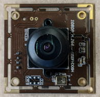
Loosen the side screw and rotate the lens unit to detach it.
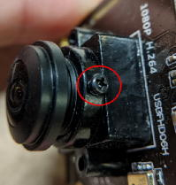 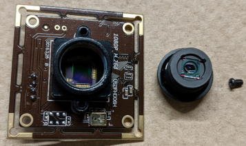
If the lens is secured with adhesive rather than screw, remove the adhesive using nippers.
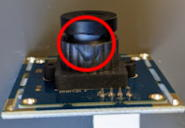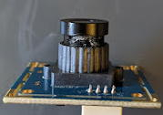
The square glass is the infrared filter. Break its four edges with nippers to detach it from the lens unit. Then reattach the lens unit to the camera body.
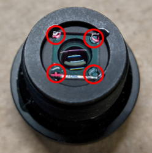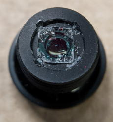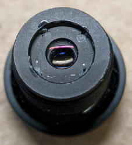
If the IR filter is circular, poke it with the tips of the nippers to create cracks and remove it.
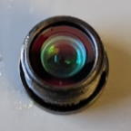->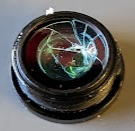->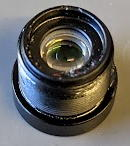
Prepare the lid, M2x20 mm screws, M2 and M3 nuts.

Position the screws and nuts like this.
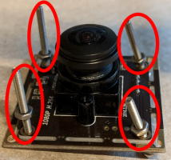
Mount the camera onto the lid and secure it with M2 nuts.
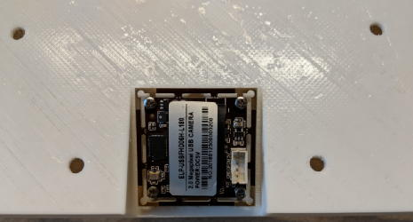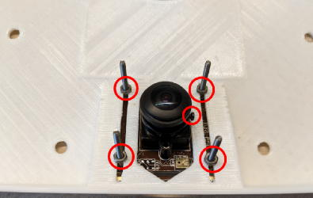
Place the lid on the chamber together with the touchscreen mask and examine for any interference between the the camera and the mask.
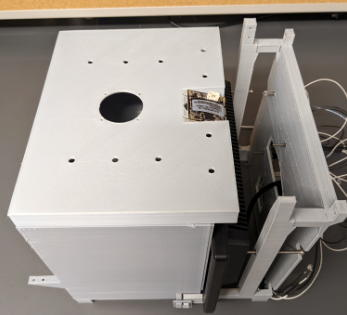
Connect the camera to the USB3 port (blue) of the Raspberry Pi.
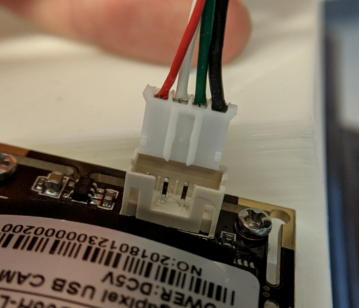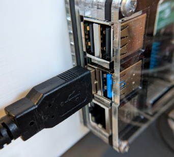
Installation of the Ventilation Fan
Attach the ventilation fan to the lid using M2x20 mm screws.
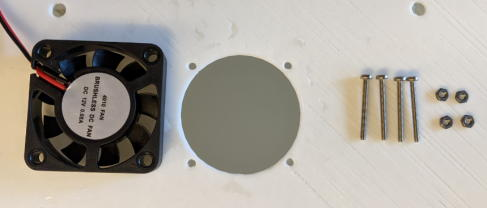>>>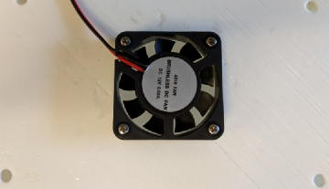
Installation of 5mm LEDs
Use the 5mm drill bit to remove burrs from the holes to ensure proper fitting of the LEDs.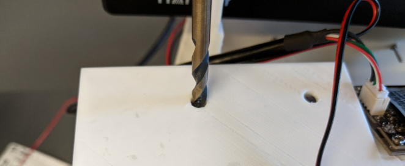
Insert infrared LEDs.
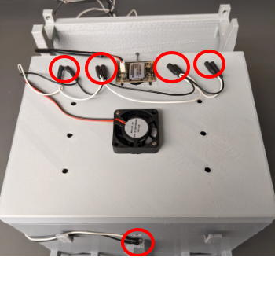
Insert cue LED.
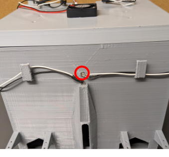
Insert white LEDs on the roof.
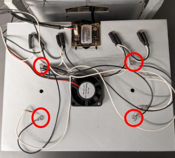
If a hole is too large to secure LED, apply a small amount of adhesive to the inner wall of the hole to reduce it diameter.
Finally, test whether the camera cover fits properly on the roof. Do not apply adhesive because it must be removable.
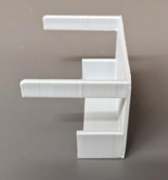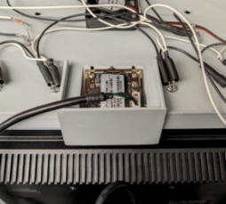